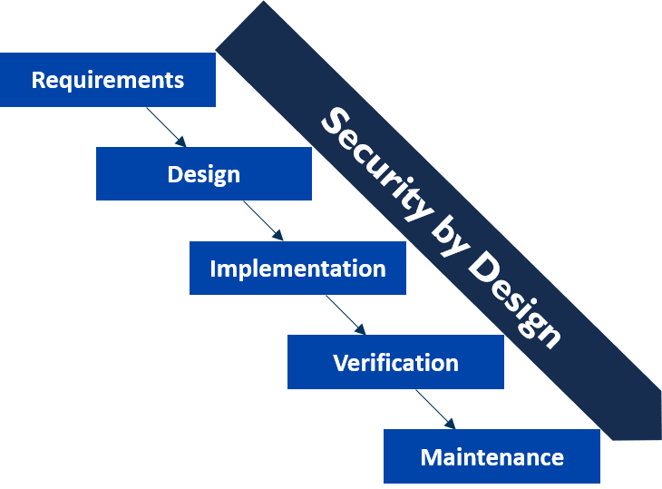

Secure by Design

Kavandatud turvalisus tarkvaratehnikas hõlmab tarkvaratoodete kavandamist, pidades silmas põhilist turvalisust. See lähenemine võtab projekteerimise algfaasis arvesse erinevaid turbestrateegiaid, taktikaid ja mustreid, valides ja rakendades arhitektuuri kaudu parimaid valikuid. Arendajad järgivad neid turbepõhimõtteid kogu arenduse vältel, tagades turvalisuse integreerimise süsteemi igasse kihti. See lähenemine on muutunud tarkvarasüsteemide kaitsmisel peavooluks, rõhutades tugevat turbearhitektuuri ja uuendatud turvameetmete pidevat integreerimist arendusprotsessi.
Pros:
- Ennetav Turvameetmete Rakendamine: Turvaline disain võimaldab rakendusesse sisse ehitada turvameetmed juba algfaasis, ennetades seeläbi potentsiaalsete turvaaugude tekkimist ja vähendades haavatavuste riski.
- Usaldusväärsus ja Integriteet: Rakendades turvalise disaini põhimõtteid, suureneb rakenduse usaldusväärsus ja andmete terviklikkus, kuna turvameetmed on süsteemi sügavalt integreeritud ja jäävad kehtima läbi kogu rakenduse elutsükli.
- Kasutajate Usaldus: Turvaline disain aitab suurendada kasutajate usaldust rakenduse vastu, kuna nad teavad, et nende isikuandmed ja muud konfidentsiaalsed andmed on korralikult kaitstud ning nende privaatsus on tagatud.
- Vähendatud Turvariskid: Tänu ennetavatele turvameetmetele väheneb rakenduse vastuvõtlikkus rünnetele, andmelekele ja muudele turvariskidele, mis võivad põhjustada olulisi kahjusid ettevõttele ja selle kasutajatele.
- Kulude Kokkuhoid: Turvalise disaini integreerimine varases arenguetapis võib aidata vältida hilisemaid turvaparandusi ja suuremaid kulutusi turvaintsidentide lahendamisele, mis võivad tekkida hiljem, kui turvaaugud on juba välja ilmunud.
Cons:
- Suurem Algkulu: Turvalise disaini integreerimine algfaasis võib nõuda suuremat algset investeeringut ressurssidesse ja aega, kuna turvameetmete väljatöötamine ja rakendamine võivad olla keerulised ja aeganõudvad protsessid.
- Kasutajamugavuse Ohverdamine: Mõned turvameetmed võivad kasutajamugavust oluliselt vähendada, näiteks tugevate paroolinõuete kasutamine või mitmeastmeliste autentimisprotsesside läbimine, mis võivad põhjustada kasutajate frustratsiooni.
- Võimalikud Vead ja Haavatavused: Kuigi turvalise disaini põhimõtted aitavad vähendada turvariske, ei ole see täielikult võimalike vigade ja haavatavuste vastu kindlustatud. Vigade või puuduste ilmnemisel võib see siiski põhjustada tõsiseid turvaalaseid tagajärgi.
- Komplekssus: Turvalise disaini rakendamine võib muuta rakenduse disaini ja arhitektuuri keerukamaks, eriti kui tuleb integreerida mitmeid erinevaid turvameetmeid ja -mehhanisme, mis võivad omavahel vastuolusid tekitada või raskendada arendusprotsessi.
- Riskide Mitteäratundmine: Kuigi turvalise disaini eesmärk on vähendada turvariske, võivad mõned riskid jääda märkamata või alahinnatuks, eriti kui turvaalased nõuded või ärijuhtumid pole piisavalt selgelt määratletud ja arvesse võetud.